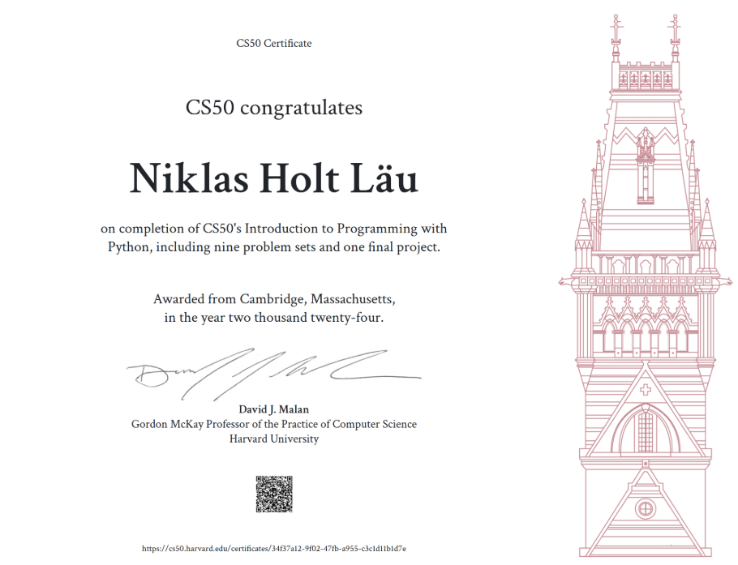

Practical programming
Apply Python fundamentals through exercises and independent development.
My final project for Harvard's CS50 Introduction to Programming with Python course. A practical project focused on user accounts, password hashing, data storage and application logic.
Harvard University · CS50's Introduction to Programming with Python
CS50's Introduction to Programming with Python is a structured course that introduces programming through practical exercises and progressively more challenging problems. It covers the fundamentals of writing, testing and debugging Python programs.
The course combines video-based lessons with hands-on problem sets. Students apply the concepts from each lesson by solving programming challenges and completing assignments.
The final project brings those skills together in an independent Python application, demonstrating the ability to turn a problem into a working program.
Apply Python fundamentals through exercises and independent development.
Develop a methodical approach to finding errors and verifying behavior.
Build an original application that brings the course concepts together.
A command-line user registration and time-tracking application
Python · Authentication · File handling
My final project is a user management program that lets users create accounts, log in and manage their profiles. It stores account information in a CSV file and hashes passwords with SHA-256 before saving them.
Video presentation of the completed application
Watch the final project demonstration.
Watch on YouTubeCS50's Introduction to Programming with Python

The certificate recognises completion of the course. The final project was part of the practical work used to demonstrate the programming concepts covered.
View certificateCompleting the course strengthened my understanding of Python, structured problem-solving, file handling, debugging and testing. Building the final project gave me an opportunity to combine these concepts in a practical application with user accounts and persistent data. It also highlighted the importance of writing code that is readable, maintainable and designed with security considerations in mind.
Course material, project demonstration and source resources